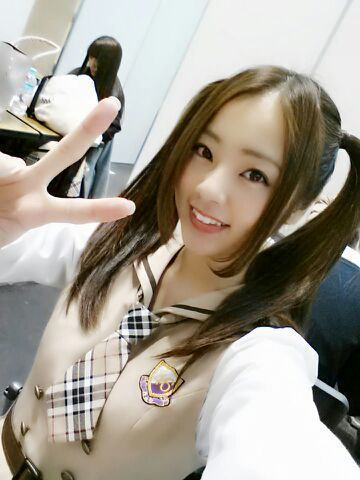

パッチパッチパッチパッチ ... ☆
はぁ〜い(*´ω｀*)
今日も１日おつかれさまです.♪
Rottyだよぉ.
まいやんちゃ〜ん & ろってぃ-ちゃ〜ん
二人でヘアーおそろっちw
ツインテールだお〜( 〃ω〃)
『 年末だしね〜 最後の全握だしツインテールしよっかぁ〜！』ってね...
年末のツイン... ねんまちゅいーーーん )))
これが噂の ねんまちゅいん。
最初 本間に恥ずかしかったぁ〜( 〃▽〃)
これめっちゃ自然な笑顔 /
知らんまに撮られたからやぁ〜
ヌハッ
今日は 2013最後の全国握手会、京都☆
本間にありがとうございました！
来てくれた皆さん、まいやんfamilyさん Rotty夢さんもありがとう！
今日は 乃木坂の握手会に初めてきたよw
って方がたくさんいらっしゃってくれて
本間に嬉しかったよ*^^*
これから どんどん仲良くなっていきたいどすえ〜( 〃ω〃) あれ？
今回も、『 私のために誰かのために 』『 初恋の人を 今でも 』歌いました！
ではではっ、引き続き 明日は個別握手会だよん.♪
皆に会えるの楽しみに待ってます！

ばいばい〜ん(*´ω｀*) のし ろってぃ-